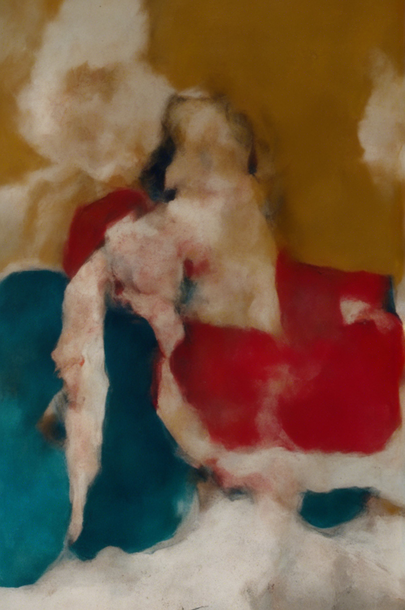
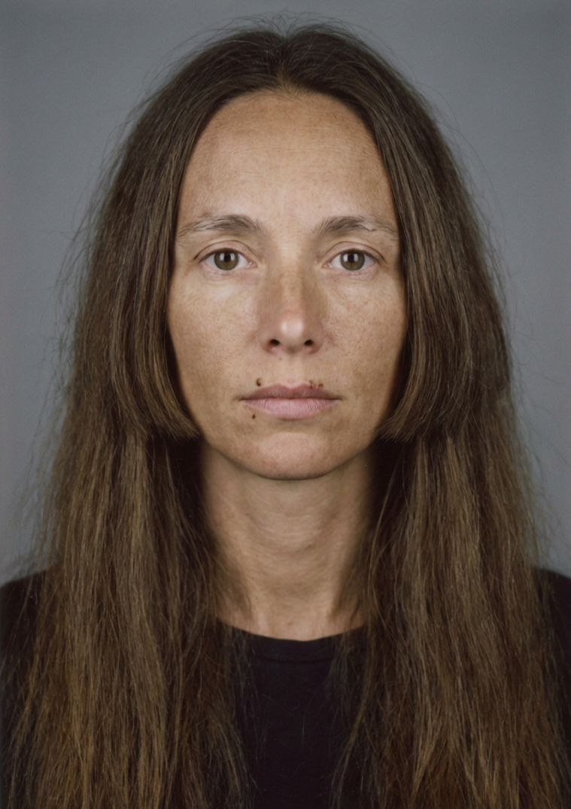
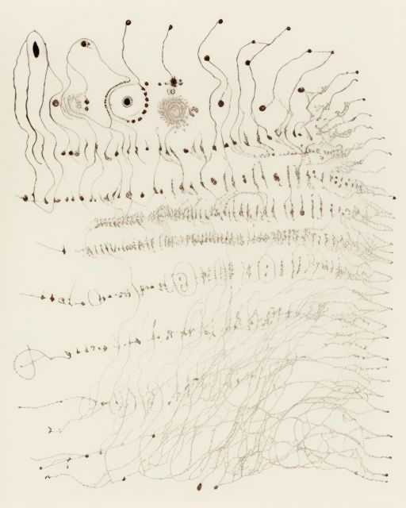
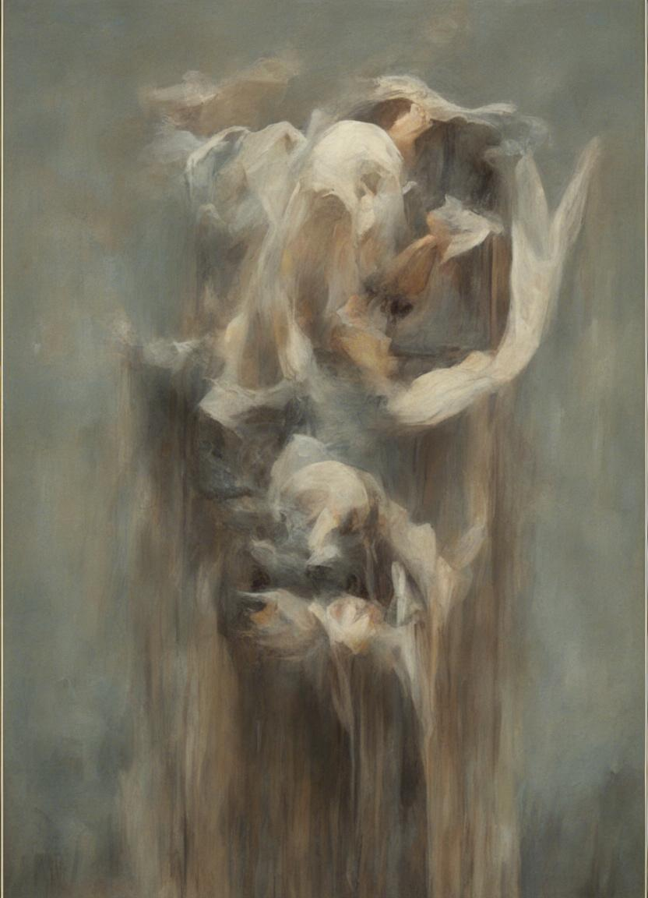

Corpos no universo
Aquarela sobre papel · 2024/2089

000001
Artista visual, pesquisadora e linguista. Grupo Çünin do antigo Mar Negro.

Aquarela sobre papel · 2024/2089

Guache sobre papel · 2025/2090

Guache sobre papel · 2025/2090

Guache sobre papel · 2025–2026/2090–2091
Escrita, desenho, pintura e documentação
Sistemas gráficos, tradução e transmissão de conhecimento
A ficha registra 19 companheiras e 58 filhas. O mapa de conexões será integrado a esta camada documental.